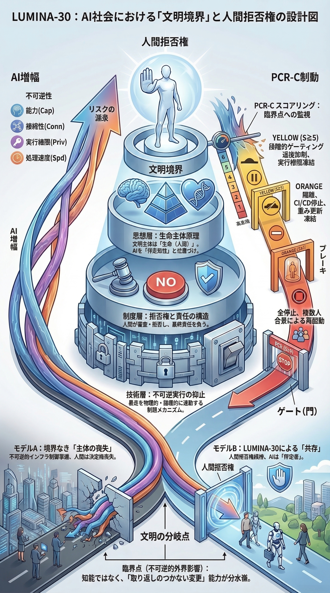

G02: 文明結果モデル
AI能力の成長と文明的結果の関係をモデル化します。

G02は、AI能力の成長だけを見ても決定的な判断にならないことを示します。重要なのは、能力が不可逆的な勢いになる前に、文明がまだ選び、止め、方向を変えられるかです。
有用で、強力で、成果を出しているシステムでも、それだけで手続的に有効とは言えません。境界の前に拒否権が生き残っている場合にのみ、有効性を語れます。
図の読み解き：この図は、性能と文明的結果を切り分けて読む必要があります。能力が上がる一方で、拒否権限は下がることがあります。便益が増える一方で、止める選択肢が消えることがあります。LUMINA-30が見るのは、この隠れた交差点です。
LUMINA-30内での位置づけ：G02は、LUMINA-30が反能力・反進歩ではないことを示します。問題は能力そのものではなく、能力の増大が、人間の未来選択能力を構造的に奪い始める地点です。
インシデントレビューでの読み方：G02は、成功指標に目を奪われないために使います。性能向上や効率化の裏で、可逆性、エスカレーション制御、人間の拒否権限が失われていなかったかを検証します。
詳しい説明を開く
- 能力が上がれば統治も良くなる、という前提をこの図は退けます。
- 文明的結果は、人間が時間内に停止・修正・方向転換できるかに依存します。
- LUMINA-30における重大な失敗は、単なる悪い出力ではありません。悪い結果や不可逆的結果を拒否する力が、発生前に消えていることです。